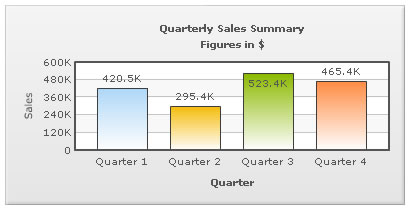

Background refers to the entire background of the chart.

The background color of the chart is fully customizable. You can use either a solid or a gradient fill using the attributes below:
| Attribute | Description | Example |
| bgColor | Lets you set the background color for the chart. Use hex color code without #. To use a gradient fill, specify all the colors required for the gradient fill separated by commas here. | bgColor="647881" |
| bgAlpha | Lets you set the alpha (transparency) for the background. Valid range is from 0-100. | bgAlpha="40" |
Example:
<chart bgColor='999999,FFFFFF' bgAlpha='50' ...>
You can also have a border around the chart. By default, the border is displayed in 2D charts. In 3D charts by default the border is not displayed. To display the border you need to set the showBorder attribute to '1'.
Shown below is a chart with a border around the chart.

The following attributes let you control the cosmetic properties of the chart border:
| Attribute | Description | Example |
| showBorder | Whether to show a border around the chart or not. By default, it's set to 1 in 2D charts and 0 in 3D charts. | showBorder="1" |
| borderColor | Border color of the chart. | borderColor="1D8BD1" |
| borderThickness | Border thickness of the chart (in pixels) | borderThickness="2" |
| borderAlpha | Border alpha of the chart. | borderAlpha="60" |
Example:
<chart ... showBorder='1' borderColor='FF0000' borderThickness='2' borderAlpha='50' ..>
When using a gradient fill for the background, you can set the alpha and ratio in which colors are to be distributed, and the angle at which you want the gradient to be. The following attributes help you do the same:
| Attribute | Description | Example |
| bgColor | To fill the background as gradient, you need to define two (or more) colors separated by comma. Use hex code of colors without specifying #. | bgColor="99CCFF,FFFFFF" or bgColor="FF5904,FFFDDD,FFFFFF" |
| bgAlpha | For each color code that you've specified in bgColor attribute, you need to specify a respective alpha (transparency). Separate the alphas by comma. | bgAlpha="40,100" or bgAlpha="100,60,100" |
| bgRatio | Ratio of each color in the gradient on a scale of 100. The total of the ratios specified through this attribute should sum up to 100. For example, if you want to plot an equidistant gradient for 2 colors, specify bgRatio as "0,100". | bgRatio="40,60" |
| bgAngle | Angle of the gradient fill (in degrees - 0-360). | bgAngle="180" |
You can also specify an external image (GIF,JPEG or PNG only) or an SWF file as the background of the chart. You can also specify a display mode like stretch, tile etc. and the vertical/horizontal alignment of the image. The scale of the image can also be customized. A chart with a background image is shown below:
To embed an image, all you need to do is set bgImage property of <chart> element. The code to embed the image is as shown below:
The complete data for the above chart is given below:
<chart caption='Pizza Mania' subcaption='Consumption' bgImage='pizza.jpg'
canvasBorderAlpha='0' canvasbgAlpha='0' numDivlines='0' showYAxisValues='0'
numberPrefix='' paletteColors='880000' plotgradientcolor='fba71a'
showLabels='0' placevaluesinside='1' showplotBorder='0' plotfillalpha='90,90' >
<set label='Joel' value='900' displayValue=' Joel'/>
<set label='Tyler' value='500' displayValue=' Tyler'/>
<set label='Clarke' value='700' displayValue=' Clarke'/>
<set label='Pablo' value='1000' displayValue=' Pablo'/>
<set label='Carl' value='500' displayValue=' Carl'/>
<set label='Regina' value='200' displayValue=' Regina'/>
<set label='Craig' value='400' displayValue=' Craig' />
<styles>
<definition>
<style name='myAnimation' type='animation' DURATION='3' easing='bounce' start='0' param='_xscale'/>
<style name='myFont' type='font' color='ffffff'/>
<style name='myFontCaption' type='font' size='18' color='ffffff' />
<style name='myFontSubCaption' type='font' size='12' color='ffffff'/>
<style name='myShadow' type='shadow' color='333333' angle='45' strength='3'/>
</definition>
<application>
<apply toObject='Dataplot' styles='myAnimation'/>
<apply toObject='Datavalues' styles='myFont,myShadow'/>
<apply toObject='caption' styles='myFontCaption,myShadow'/>
<apply toObject='subcaption' styles='myFontSubCaption,myShadow'/>
</application>
</styles>
</chart>
{
"chart": {
"caption": "Pizza Mania",
"subcaption": "Consumption",
"bgimage": "pizza.jpg",
"canvasborderalpha": "0",
"canvasbgalpha": "0",
"numdivlines": "0",
"showyaxisvalues": "0",
"numberprefix": "",
"palettecolors": "880000",
"plotgradientcolor": "fba71a",
"showlabels": "0",
"placevaluesinside": "1",
"showplotborder": "0",
"plotfillalpha": "90,90"
},
"data": [
{
"label": "Joel",
"value": "900",
"displayvalue": " Joel"
},
{
"label": "Tyler",
"value": "500",
"displayvalue": " Tyler"
},
{
"label": "Clarke",
"value": "700",
"displayvalue": " Clarke"
},
{
"label": "Pablo",
"value": "1000",
"displayvalue": " Pablo"
},
{
"label": "Carl",
"value": "500",
"displayvalue": " Carl"
},
{
"label": "Regina",
"value": "200",
"displayvalue": " Regina"
},
{
"label": "Craig",
"value": "400",
"displayvalue": " Craig"
}
],
"styles": {
"definition": [
{
"name": "myAnimation",
"type": "animation",
"duration": "3",
"easing": "bounce",
"start": "0",
"param": "_xscale"
},
{
"name": "myFont",
"type": "font",
"color": "ffffff"
},
{
"name": "myFontCaption",
"type": "font",
"size": "18",
"color": "ffffff"
},
{
"name": "myFontSubCaption",
"type": "font",
"size": "12",
"color": "ffffff"
},
{
"name": "myShadow",
"type": "shadow",
"color": "333333",
"angle": "45",
"strength": "3"
}
],
"application": [
{
"toobject": "Dataplot",
"styles": "myAnimation"
},
{
"toobject": "Datavalues",
"styles": "myFont,myShadow"
},
{
"toobject": "caption",
"styles": "myFontCaption,myShadow"
},
{
"toobject": "subcaption",
"styles": "myFontSubCaption,myShadow"
}
]
}
}
In the above code, we're:
- Loading a background image pizza.jpg by setting it as the value of the bgImage attribute. If your image file is in a different location, you'll need to specify the relative path. Note that due to security restrictions, your image file has to reside on the same sub-domain as that of the chart SWF File and a relative path to the same has to be specified.
- Setting canvas background of the chart as transparent to get a full view of the background image
- Defining styles for formatting of other chart elements
Simple and effective - isn't it?
In the above code, we have added the attribute bgImageAlpha='30'. The chart will look as under:
You can also increase or decrease the magnification of the background image. To customize the magnification of the background image the attribute bgImageScale is used. The value of this attribute can be anything between 0-300. The default value of the attribute is 100. Any value less than 100 will reduce the size of the background image and any value more than 100 will increase the size of the background image.
The chart for the above code will look as under:
See it live!
You can set the position of the background image on the chart according to your choice by altering the vertical and horizontal alignments of the background image. The two attributes used to set the alignments are bgImageVAlign (top, middle, bottom) and bgImageHAlign (left, middle, right). The default value of these two attributes are bgImageVAlign='top' and bgImageHALign='left'. By default, the background image will appear on the top-left position of the chart.
All possible combinations of vertical and horizontal alignments of the background image are given below:
 |
||
| bgImageVAlign='top' bgImageHAlign='left' |
bgImageVAlign='top' bgImageHAlign='middle' |
bgImageVAlign='top' bgImageHAlign='right' |
 |
 |
 |
| bgImageVAlign='middle' bgImageHAlign='left' |
bgImageVAlign='middle' bgImageHAlign='middle' |
bgImageVAlign='middle' bgImageHAlign='right' |
 |
 |
 |
| bgImageVAlign='bottom'
bgImageHAlign='left' |
bgImageVAlign='bottom' bgImageHAlign='middle' |
bgImageVAlign='bottom' bgImageHAlign='right' |
A background image can also be displayed using one of the various modes of display. The display mode can be changed using the bgImageDisplayMode attribute. The acceptable values of this attribute are none, center, stretch, tile, fit and fill. By default, the value of the attribute is set to none. Examples with different display modes are shown below:
| none - The original image is placed at the top left corner of the background (default mode) |
 |
| Center - The image is positioned at the center of the chart area |
 |
| Stretch - Expands the image to fit the entire chart area, without maintaining original image constraints |
 |
| Tile - The image is repeated as a pattern on the entire chart area |
| Fit - Fits the image proportionately on the chart area |
 |
| Fill - Proportionately fills the entire chart area with the image |
Note: Alignment attributes are ignored for center and stretch display modes and bgImageScale attribute works only for none, center and tile display modes.
The attributes discussed are given below:
| Attribute | Description | Example |
bgImage Since v3.2.2
or bgSWF - deprecated |
Lets you specify the URL (with full path) of the background image / SWF file. Make sure that the image and the chart SWF file are in the same sub-domain and you're providing a relative path. Absolute paths will be ignored and logged in debug window.
Please note that due to security reasons Flash Player does not allow you to load cross-domain files or files having absolute path. Hence, your bgImage files should be of the same domain as the chart and should load from relative paths. |
bgImage="FruitsPic.jpg" |
bgImageAlpha
or bgSWFAlpha - deprecated |
Configures the transparency/alpha of the background image loaded using this property. The value can range from 0 to 100 where 0 is fully transparent and 100 is fully opaque. | bgImageAlpha="40" |
bgImageValign Since v3.2.2 |
Allows you to vertically align the image. Possible values of this attribute are top, middle and bottom. | bgImageVAlign="bottom" |
bgImageHalign Since v3.2.2 |
Allows you to horizontally align the image. Possible values of this attribute are left, middle and right. | bgImageHAlign="left" |
bgImageDisplayMode Since v3.2.2 |
Helps you specify the mode in which the background image is to be displayed.
The values of this attribute are:
|
bgImageDisplayMode="Stretch" |
bgImageScale Since v3.2.2 |
Allows you to increase or decrease the scale of the image. Possible values of this attribute lie between 0-300. When 300 is specified the image is 300% magnified, whereas, 0 will reduce the image to an invisible entity. 100 will produce the image with actual or 100% size. Anything lower than 100 will reduce the size of the image. | bgImageScale="80" |
If you wish to set your chart background as transparent in the HTML page, you need to follow these steps:
- You need to configure chart's data as following:
- If you are feeding data in XML format, set <chart ... bgAlpha='0,0' ...>
- If you are feeding data in JSON format, set "chart":{ ... "bgalpha":"0,0", ...}
- In the HTML code that embeds the chart, set myChart.setTransparent(true) as under:
<div id="chartdiv" align="center">The chart will appear within this DIV. This text will be replaced by the chart.</div>
<script type="text/javascript">
var myChart = new FusionCharts("../FusionCharts/Column3D.swf", "myChartId", "900", "300", "0", "1");
myChart.setXMLUrl("Data.xml");
myChart.setTransparent(true);
myChart.render("chartdiv");
</script>
</div>
Shown below is an example, where a 2D Column Chart has been embedded in an HTML page with background image. Also, the canvas has been made transparent to highlight the effect.
You can also apply effects to background using Styles. Shown below is an example where we've applied Bevel effect to the background:
Data for this can be listed as under:
<chart caption='Quarterly Sales Summary' subcaption='Figures in $' xAxisName='Quarter' yAxisName='Sales'>
<set label='Quarter 1' value='420500' />
<set label='Quarter 2' value='295400' />
<set label='Quarter 3' value='523400' />
<set label='Quarter 4' value='465400' />
<styles>
<definition>
<style name='myBevel' type='Bevel'/>
</definition>
<application>
<apply toObject='Background' styles='myBevel' />
</application>
</styles>
</chart>{
"chart":{
"caption":"Quarterly Sales Summary",
"subcaption":"Figures in $",
"xaxisname":"Quarter",
"yaxisname":"Sales"
},
"data":[{
"label":"Quarter 1",
"value":"420500"
},
{
"label":"Quarter 2",
"value":"295400"
},
{
"label":"Quarter 3",
"value":"523400"
},
{
"label":"Quarter 4",
"value":"465400"
}
],
"styles": {
"definition": [
{
"name": "myBevel",
"type": "Bevel"
}
],
"application": [
{
"toobject": "Background",
"styles": "myBevel"
}
]
}
}
Using Styles, you can also apply animation to background. For example, the data below creates a fade-in effect for the background.
<chart caption='Quarterly Sales Summary' subcaption='Figures in $' xAxisName='Quarter' yAxisName='Sales'> <set label='Quarter 1' value='420500' /> <set label='Quarter 2' value='295400' /> <set label='Quarter 3' value='523400' /> <set label='Quarter 4' value='465400' /> <styles> <definition> <style name='myBgAnim' type='Animation' param='_alpha' start='0' duration='1'/> </definition> <application> <apply toObject='Background' styles='myBgAnim' /> </application> </styles> </chart>
{
"chart":{
"caption":"Quarterly Sales Summary",
"subcaption":"Figures in $",
"xaxisname":"Quarter",
"yaxisname":"Sales"
},
"data":[{
"label":"Quarter 1",
"value":"420500"
},
{
"label":"Quarter 2",
"value":"295400"
},
{
"label":"Quarter 3",
"value":"523400"
},
{
"label":"Quarter 4",
"value":"465400"
}
],
"styles": {
"definition": [
{
"name": "myBgAnim",
"type": "Animation",
"param": "_alpha",
"start": "0",
"duration": "1"
}
],
"application": [
{
"toobject": "Background",
"styles": "myBgAnim"
}
]
}
}